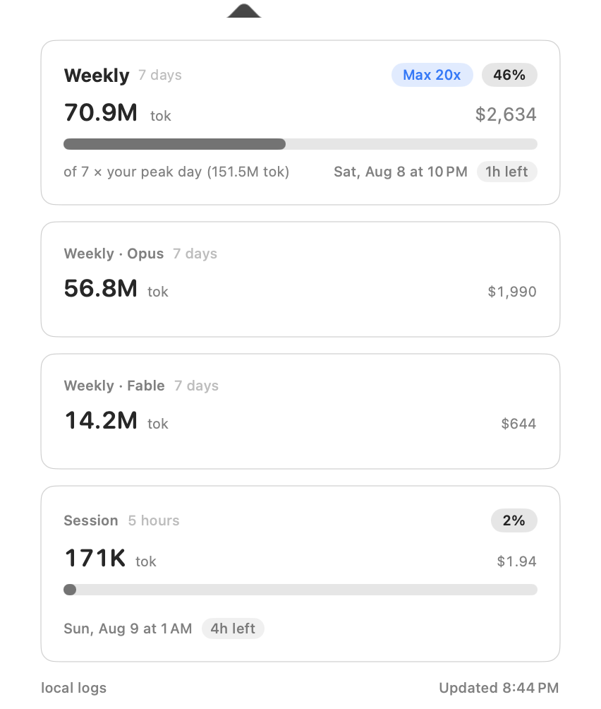
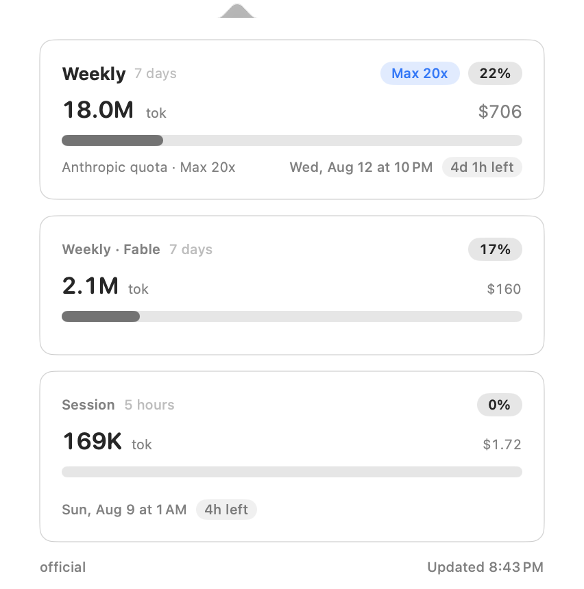
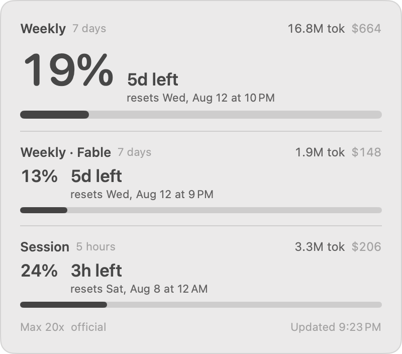

Your Claude Code usage,
at a glance.
It lives in the menu bar as a single number: your 7-day usage, read from the logs Claude Code already writes on your Mac. Click it for the full picture, or press ⌥⌘U to float the window list over whatever you're doing. That floating list shows for five seconds, and waits as long as your pointer is on it.
Every window you actually have
Real token counts from your own logs, priced with a cache-aware rate table. A percentage needs something to divide by, and you don't have to be the one who supplies it: type your plan's limits into Settings if you know them, or let each window calibrate against your own history — the 5-hour window against the P90 of your past 5-hour blocks, the weekly window against seven days at the pace of your heaviest whole day. Either way the card prints what it divided by. Turn official usage on and Anthropic's own figures replace both.


/status prints — including the plan label. Local tokens are recounted over Anthropic's window rather than ours.
Real screenshots, so the figures are one machine's actual usage. The per-project breakdown sits below these cards in the app — it's cropped out here because it lists real project names.
Everything You Need to Manage Claude Code Usage
Stay informed about every dimension of your usage without breaking your flow.
Windows That Match Your Account
A 7-day window, a 5-hour session window, and one more for each model family found in your logs — not a fixed list. Turn on official usage and the set becomes Anthropic's own instead, scoped per-model windows included. If that fetch doesn't come back, the local windows stay.
Know When Limits Reset
Every window shows when it resets and how long is left, so you can plan your work around a reset instead of waiting and refreshing. Windows that share a reset print it once, at the top, rather than repeating the same line down the popover.
Three Glances, No Main Window
One number in the menu bar for the constant glance: your 7-day total, as a percentage when there's a limit to divide by and a raw token count otherwise. When there's no weekly window to read, the icon sits there on its own.
Click it for the popover — every window, plus a per-project breakdown of the last 7 days. Opening the popover brings the app forward, so Esc, ⌘R and ⌘, work straight away. Press ⌥⌘U for the same window list floating over anything, including full-screen apps where the menu bar isn't reachable. The HUD leaves your focus where it is, and skips the project breakdown — five seconds isn't long enough to read it. Settings opens in a small window of its own; nothing else does.
Quiet Until It Matters
Normal usage stays neutral instead of shouting green, so orange at 80% and red past your limit actually stand out. The bar and the percentage chip name the level to VoiceOver — OK, near limit, over limit — so the signal isn't hue alone.
No Login, No Keys
Reads the JSONL logs Claude Code already writes on your Mac. No account to connect, no API keys to manage, no config files to edit.
The official percentage is the exception, and it's off by default. It borrows Claude Code's existing keychain login rather than asking for one. Treat it as experimental: the endpoint isn't a documented public API, Anthropic discourages third-party use of that login, and it can stop working without notice.
Honest Numbers
Events are de-duplicated on the same messageId:requestId key ccusage uses, cost comes from a cache-aware rate table with per-family fallbacks, and the twenty busiest projects each get their own line. A model id the table can't place still counts its tokens — it just can't price them.
Install
One command with Homebrew, or a notarized DMG. Building from source needs Xcode and no Apple Developer account.
Homebrew
brew install hulryung/tap/claude-rate-monitor
Or take the DMG from the releases page and drag the app to Applications. The DMG and the app inside it are both signed with a Developer ID certificate and notarized by Apple, so Gatekeeper opens it without a trip through System Settings.
Build from Source
Clone the repository, then, from its root:
xcodegen generate
xcodebuild build -project CCRateWidget.xcodeproj -scheme CCRateWidget -configuration Release CODE_SIGNING_ALLOWED=NO CODE_SIGNING_REQUIRED=NO CODE_SIGN_IDENTITY=""
Needs Xcode 16 or newer and XcodeGen (brew install xcodegen). The Xcode project is generated rather than committed, so xcodegen generate has to run first. The result is an unsigned build — full instructions are in the README.
Upgrading from v1.5.2 (6 March 2026)? That build is a different app rather than an older cut of this one — it read no logs and reported no tokens and no cost, only a quota percentage fetched after you signed in to Anthropic. Your settings carry over; the desktop widget does not come back.
After Launching
Find It in the Menu Bar
There's no main window and no Dock icon. Look for the gauge icon at the top of the screen — it installs itself at launch, with nothing to switch on.
Grant Access — Only If Asked
With a normal Claude Code install there's nothing to do here — numbers appear on their own, and the app never prompts. If it can't reach ~/.claude/projects, where Claude Code keeps its logs, the popover shows Setup required with a Grant Access button. That button opens a folder picker on that directory, and macOS asks about home-folder access there. The same action lives in Settings as Re-prompt for ~/.claude access.
Set Your Limits
Optional. Press ⌘, in the popover to open Settings and enter your plan's token limits, so the weekly and session windows measure against them. Leave them blank and each window calibrates against your own history instead — the session against the P90 of your past 5-hour blocks, the week against seven days at your heaviest day's pace. Both need three past samples first, and until then that window shows tokens only. ⌥⌘U is already on, and official Anthropic percentages are the one thing here that's off by default.